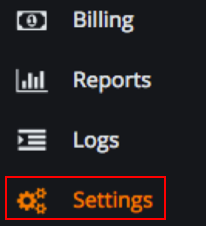
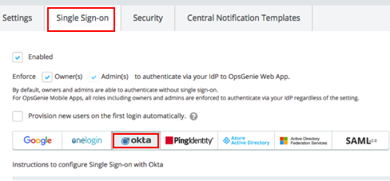
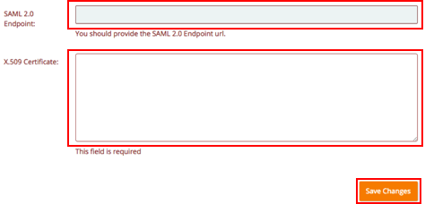
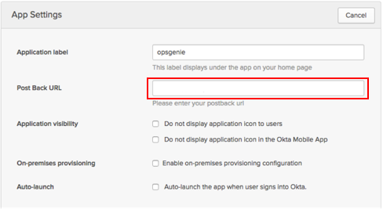

In OpsGenie, go to the Settings tab, as shown below.

Click Single Sign-on on the screen that opens, and then click Okta, as shown below.

In the screen that opens, copy and paste the following SAML 2.0 Endpoint, as shown in the following step.
Sign in to the Okta Admin app to generate this variable.
Copy and paste the following x.509 Certificate, as shown below.
Sign in to the Okta Admin app to generate this variable.

In Okta, on the General Tab for the OpsGenie app in the App Settings section, paste the Single sign on URL that you copied in the previous step into the Post Back URL field, as shown below.

Done!
Notes:
IdP-initiated flows and Just in Time (JIT) provisioning are supported.
SP-inititated flows are not supported.